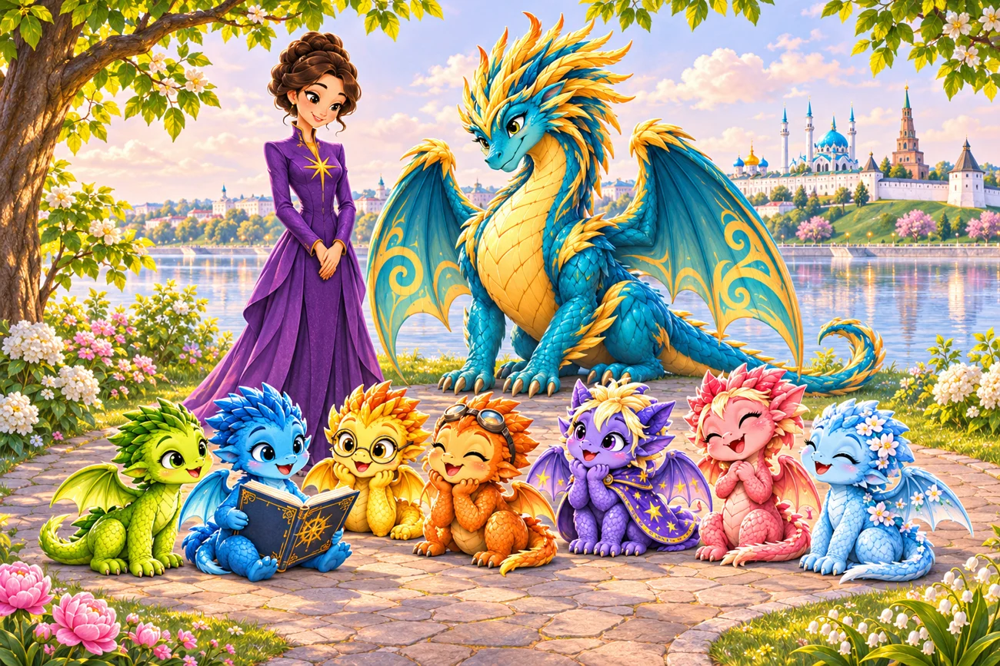
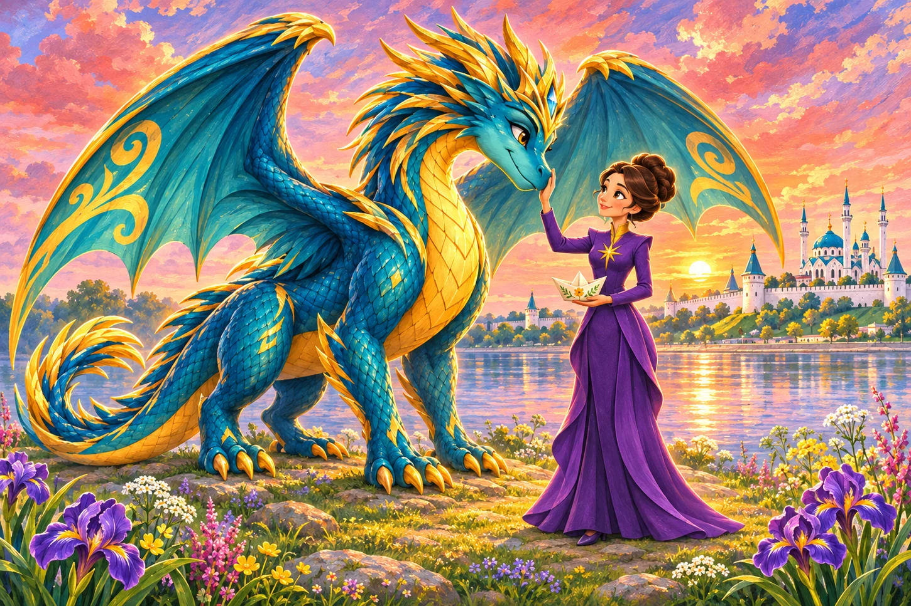
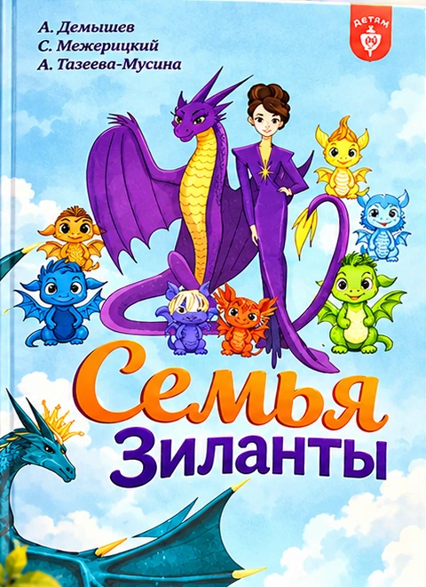

На берегу Казанки
Мама Зиланта
и папа Зилант
Зиланта опускает на воду бумажный кораблик. Зилант расправляет крыло. Интересно, хватит ли одного взмаха, чтобы кораблик доплыл до кувшинок?

Что там у Втора в книге? Семеро крылатых любопытных носов уже собрались у реки. Подсаживайся поближе!
Познакомиться с семьёйВыбери зилантёнка. Каждый покажет тебе свой уголок Казани.
Зиланта опускает на воду бумажный кораблик. Зилант расправляет крыло. Интересно, хватит ли одного взмаха, чтобы кораблик доплыл до кувшинок?


На этих страницах у зилантят есть и драконьи, и человеческие образы. Рассмотрите их вместе: по каким приметам можно узнать одного и того же героя?